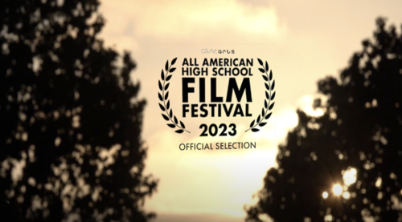
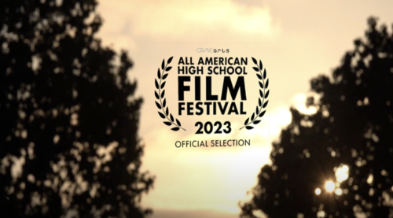
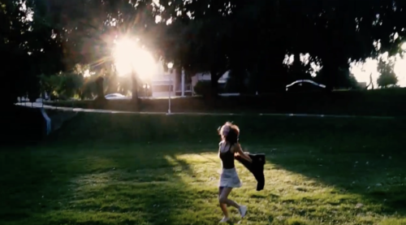
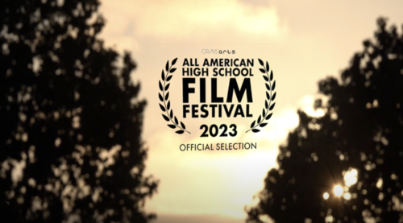
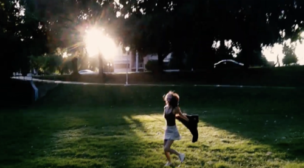

Chloe Kim
Hello I am Chloe Kim from San Diego. I have created films since the summer after third grade and I have made over 400 films. Notably, my film last year was selected for the All American High School Film Festival to be screened at the AMC Theater in Times Square, New York. This was 250 out of over 2,000 submissions. Filmmaking is a teamwork. This I learned through 400 films I have made with my friends. If team members have strong views on issues, we could end up in a deadlock situation. These come in vagueness in problem statements, differences in assumptions; misinterpretations of each party’s interests. Active listening and willingness to meet peers halfway instead of bending over backwards will ultimately resolve the problem. I have learned this through trial and errors, and grew up in screenwriting and directing.
Creative Portfolio List
Films:
July 2023, The Girl Who Painted the Sky, 4 minutes 35 seconds. Position: writer/director/actor. A girl views life through a canvas and paints color onto people’s lives with her paintbrush. Created for the All American High School Film Festival selected to be screened in Times Square, New York.
July 2015, Me and Tyrantrum, digital video, 1 minute 44 seconds. Position: writer/director/actor. A pokemon battle between Pikachu and Blaziken.
March 2021, The Eraser, digital video, 1 minute 1 second. Position: writer/director. A film of the life and journey of an eraser. Created for a freshman-year video film project, Torrey Pines High School, San Diego, California.
December 2020, Showdown, digital video, 2 minutes 13 seconds. Position: writer/director/actor. A film of two street musicians performing. Created for freshman-year video film project, Torrey Pines High School, San Diego, California.
August 2022, Ship Battle, digital video, 3 minutes 32 seconds. Position: writer/director/actor. Two girls play a board game where a ship sinks and it turns out to be the “Titanic”, San Diego, California.
June 2022, The Winds in Portland, digital video, 6 minutes 17 seconds. Position: writer/director/actor. A documentary of the Portland scenery. Portland, Oregon
November 2022, 16 going on 17, digital video, 1 minute 57 seconds. Position: writer/director/actor. A parody combining The Sound of Music and Cinderella. San Diego, California.
Audiobook: October 2021, Behind the Gym, audiobook, 2 minutes 17 seconds. Position: editor, narrator. An audiobook recording with music and sound effects of the "Behind the Gym" chapter from The Chronicles of Narnia. San Diego, California.Play:December 2019, Wizard of Oz, play. Position: director. A performed scene of "The Wizard of Oz" where Dorothy lands in the land of Oz. Directed for a drama class production, Carmel Valley, Middle School, San Diego, California. Poems:July 2022, Lilacs In Disguise, poem. Position: writer. A poem describing a little girl to a lilac. San Diego, California.May 2023, MASK, poem. Position: writer. A poem describing how a person learns to survive. Created for AP Lang class for a poetry unit, Torrey Pines High School, San Diego, California.
Experience
Filmmaker
• Directed actors and crews to create vision for films and bring scripts to life.
• Created story board
• Experience with Final Cut Pro X, Adobe Premiere Pro
Track Athlete
• Trained extensively and observed proper nutrition for weeks leading up to national-level fitness competitions.
• Attended all practices, meetings, and workouts on time.
Education
University of California Riverside
Portfolio
 


